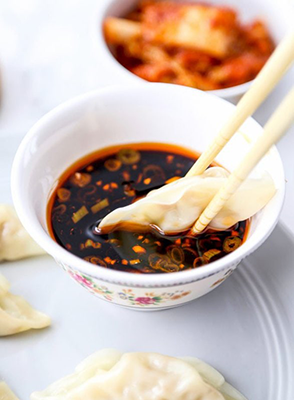

The unique geographical environment and the large-scale brewing technology have provided a continuous high-quality supply chain for Zhenjiang Vinegar, while, on the other hand, the high consumption of Zhenjiang citizens for vinegar has also become an indispensable part of vinegar culture. Because Zhenjiang has immigrants from the north in history, they like to eat wheat food (wheat is the staple food in northern China), and drinking vinegar can neutralize the alkali in the wheat food. As time went by, drinking vinegar developed into a habit.
Zhenjiang Vinegar can enhance the flavor and aroma, remove the fishy and greasy, and help the appetite and seasoning. In fact, vinegar also holds medicinal value and has been included in many medical prescriptions. In the Compendium of Materia Medica by Li Shizhen, a distinguished medical scientist in the Ming Dynasty, it is stated that: “Decoction with salt and vinegar to treat cholera, vomiting, and diarrhea. Use old cotton soaked in vinegar and wrap the painful area with steam heat for the foot cramp.” Besides, vinegar can lower blood pressure and blood fat because it contains vitamin C and rich potassium, which can dilate blood vessels, promote the excretion of cholesterol, and enhance the elasticity and permeability of blood vessels.
